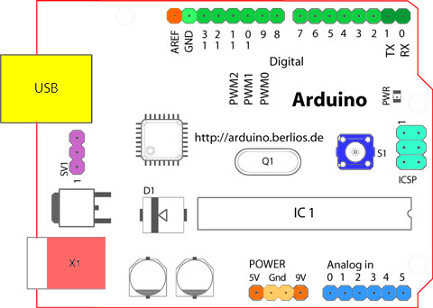
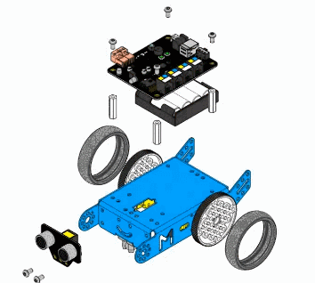

BASICS
OF
ARDUINO
INTRODUCTION
EXPLANATION
DEMO
WHAT ELSE WE CAN DO WITH THIS
INTRODUCTION

WHY LEARN ELECTRONICS
- Understanding how to read schematics, solder, program, and build circuits instills a unique understanding of the world we live in.
Our lives are so infused with electronics. We rely on gadgets and gizmos for most of the tasks. We use them for communication, entertainment you name it.
They help us understand the things we use on daily basis.
What is a Microcontroller
- In a Nutshell, Microcontroller takes an input, process data according to the instruction written in its memory and gives the output for controlling other machines and devices.
- It consists of Memory, a Processor as well as I/O Interfaces.
What is an Arduino?
- Arduino is an open-source electronics prototyping platform based on flexible, easy-to-use hardware and software. It’s intended for artists, designers, hobbyists, and anyone interested in creating interactive objects or environments.

Explanation
Massimo Banzi
Pub
Why Arduino?
The Arduino software is easy-to-use for beginners, yet flexible enough for advanced users.
- Inexpensive
- Simple, Clear Programming Environment
- Open source
- Options
Explanation
Massimo Banzi
Pub
Show the available boards
WHAT CAN WE DO WITH ARDUINO

|
ARDUINO HARDWARE
ATMEGA-328P MICROCONTROLLER
|
|
8-bit microcontroller 32 kB of flash memory 2kB of SRAM 20 GPIO pins SPI serial port |
Input/Output Pins
|
Digital input/output Pins |
|
|
Analog input/output Pins |
POWER PINS
PROGRAMMING
BASIC PROGRAM LAYOUT
void setup() {
}
void loop() {
}
SETUP
pinMode, INPUT, OUTPUT, HIGH, LOW
void setup() {
pinMode(13, OUTPUT);
}
LOOPING
digitalwrite, digitalRead, analogRead, analogWrite
void setup() {
pinMode(13, OUTPUT);
}
void loop() {
digitalWrite(13, HIGH);
}
INTRODUCING DELAY
delay(), delayMicroseconds()
void setup() {
pinMode(13, OUTPUT);
}
void loop() {
digitalWrite(13, HIGH);
delay(1000);
digitalWrite(13, HIGH);
delay(1000);
}
AUTOMATIC LIGHTING CONTROL SYSTEM

VARIABLE RESISTORS

AUTOMATING
This system works by sensing the intensity of light
in its environment. The sensor that can be used
to detect light is an LDR.
CIRCUIT
PROGRAM
int ledPin = 3;
int photocell = 0;
void setup() {
pinMode(ledpin, OUTPUT);
Serial.begin(9600);
}
void loop() {
photocell = (analogRead(0)/4);
analogWrite(ledPin, photocell);
Serial.print(photocell);
delay(20);
}
BLUETOOTH CONTROL
SOUND
WHAT IS SOUND
SPEED OF SOUND
So what if a say that the speed of sound is 330m/s ?
Will you accept it?
HC-SR04

HC-SR04 WORKING
MEASURING SPEED OF SOUND
LETS MAKE A ROBOT

WHAT ELSE CAN WE DO WITH THIS
WALL AVOIDANCE
EDGE AVOIDER
So what if a say that the speed of sound is 330m/s ?
Will you accept it?
MAZE SOLVER

CLEANING ROBOT
FACE DETECTION
AND
RECOGNITION
IN A NUTSHELL
DEMO
FACE RECOGNITION